안 보는 출력에 새는 요금
이 영상은 같은 채널의 Headroom 소개 영상에서 짧게 지나갔던 rtk 하나만 처음부터 끝까지 다뤄요. 출발점은 단순한 질문이에요. Claude Code 요금이 생각보다 많이 나온다면, 그 돈은 어디로 새고 있을까요.
먼저 토큰이에요. 토큰은 AI 요금을 매기는 단위이고, AI가 읽고 쓰는 글자량만큼 돈이 나간다고 보면 돼요. 그런데 AI는 코딩하면서 명령을 정말 자주 돌려요. 아래 슬라이드의 세 줄이 대표적인 예예요. 테스트를 돌리고, 변경 내역을 보고, 로그를 열어요.
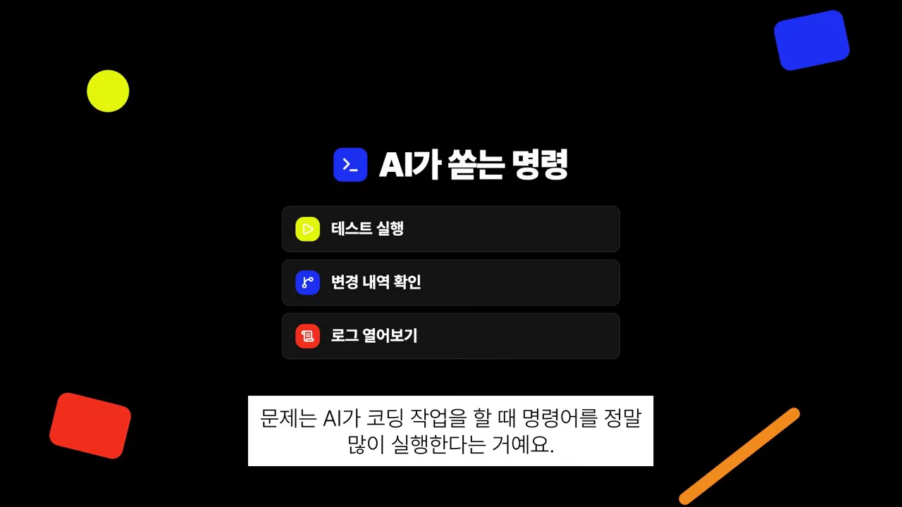
문제는 출력의 양이에요. 다음 슬라이드는 이걸 숫자 두 개로 요약해요. 왼쪽 '수백 줄'은 명령 한 번이 쏟아내는 양이고, 오른쪽 '매 턴'은 그 출력이 한 번으로 끝나지 않는다는 뜻이에요.
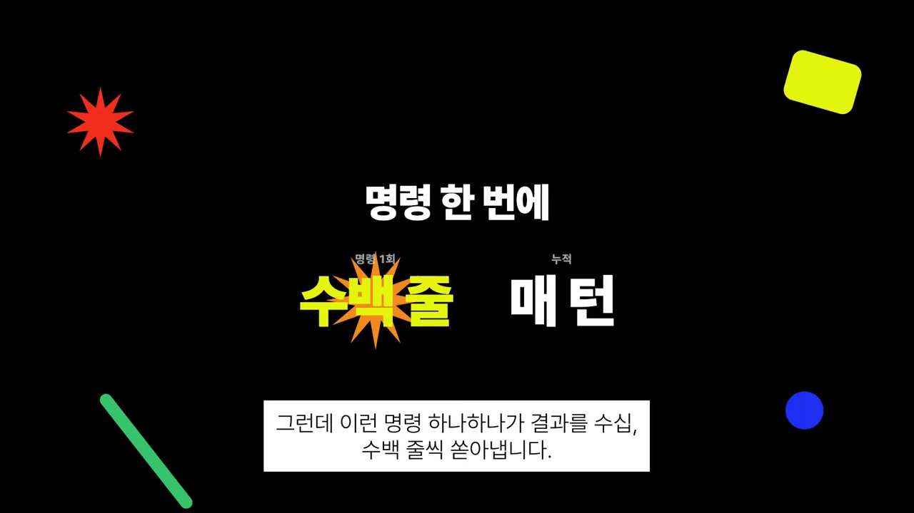
테스트 결과로 생각하면 쉬워요. 정말 필요한 건 통과했는지, 실패했다면 어디서 실패했는지 몇 줄뿐이에요. 나머지 수백 줄은 '잘 됐다'는 도장만 줄줄이 찍힌 영수증이에요. 영상은 이걸 영수증을 한 글자도 빼지 않고 돈 주고 읽는 셈이라고 표현해요.
rtk는 무엇이고 어떻게 줄일까요
바로 이 지점을 노린 도구가 rtk예요. 이름은 Rust Token Killer이고, Rust로 만든 토큰 절감 도구라는 뜻이에요. 첫 슬라이드의 태그 세 개가 성격을 요약해요. 오픈소스이고, 단일 바이너리이고, 무료예요. 아래 칸에는 GitHub 별 6만 개 이상, 라이선스 Apache 2.0이 적혀 있어요.
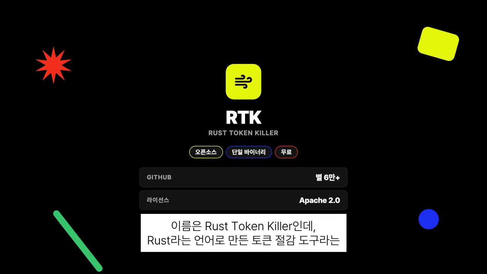
이어서 실제 GitHub 저장소 화면을 띄워요. 오른쪽 About 칸의 소개 문구가 영상 제목의 숫자와 같아요. 흔한 개발 명령에서 LLM(Large Language Model) 토큰 소비를 60~90% 줄이는 CLI(Command-Line Interface) 프록시라고 적혀 있어요.
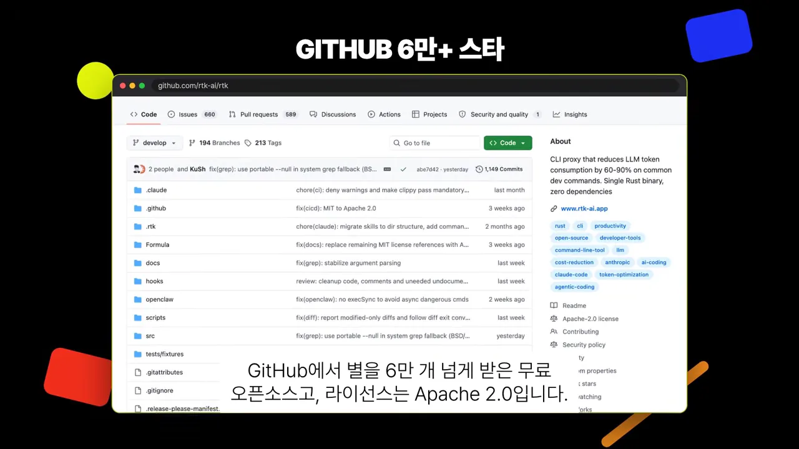
네 가지 줄이는 방법
rtk가 하는 일은 한 문장이에요. 명령 결과가 AI에게 넘어가기 직전에 군더더기를 걷어내고 핵심만 남겨요. 영상은 rtk를 출력이 들어오는 길목의 문지기에 빗대요. 그 문지기가 쓰는 방법이 네 가지예요. 아래 그림은 영상이 설명한 네 방법을 한 줄씩 옮긴 거예요.
넷 중 영상이 따로 슬라이드로 보여 준 건 중복 접기예요. 왼쪽 빨간 칸이 그대로 둘 때의 '같은 로그 100줄', 오른쪽 노란 칸이 rtk를 거친 뒤의 '100번 반복 = 1줄'이에요. 영상은 같은 안내문 100장을 '이 문구 100장'이라는 메모 한 장으로 바꾸는 일에 빗대요.
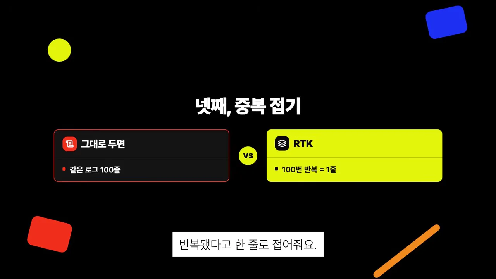
30분 작업으로 본 절감률
숫자로 보면 체감이 돼요. 영상은 rtk 저장소에 공개된 30분짜리 코딩 작업 기준 절감표를 옮겨 와요. 막대 네 개 중 맨 아래 노란 막대가 테스트예요. 테스트만 90%로 가장 길고, 나머지는 75~80%예요.
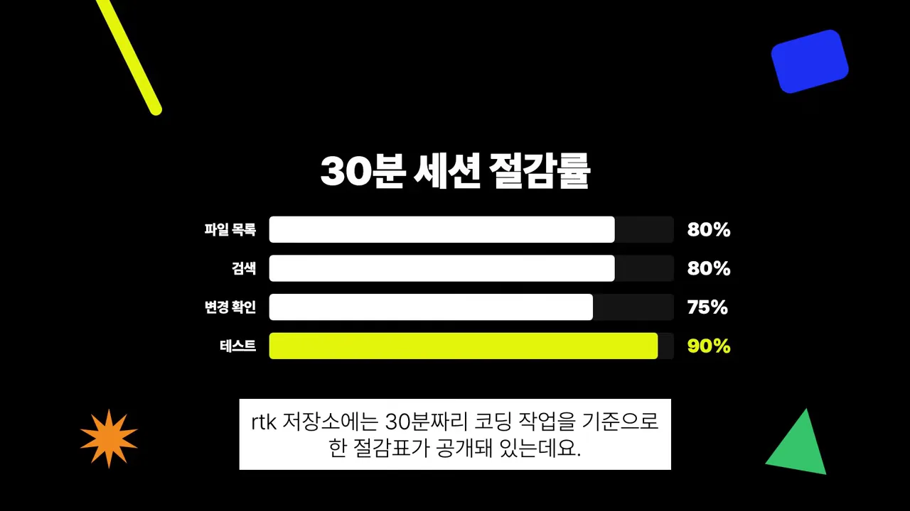
네 명령을 다 합친 결과도 나와요. 118,000 토큰짜리 작업이 약 24,000 토큰이 돼서 전체 80%가 줄었어요. 같은 눈금으로 그리면 줄어든 폭이 이만큼이에요.
설치하고 연결하고 확인하기
영상에 나오는 명령은 넷이에요. 먼저 표로 훑고, 하나씩 화면과 함께 볼게요.
| 명령 | 언제 | 하는 일 |
|---|---|---|
curl … install.sh | sh | 처음 한 번 | rtk 설치 |
rtk init -g | 설치 직후 한 번 | Claude Code의 터미널 명령이 rtk를 자동으로 거치게 설정, 기존 설정은 백업 |
rtk gain | 설치 확인 · 수시로 | 아낀 토큰 통계와 며칠 치 그래프 |
rtk discover | 가끔 | 작업 기록에서 놓친 절감 기회 찾기 |
설치는 한 줄이에요. 터미널에 아래 명령을 붙여넣고 실행하면 rtk가 깔려요. 영상 화면의 터미널에 찍힌 명령이 이거예요.
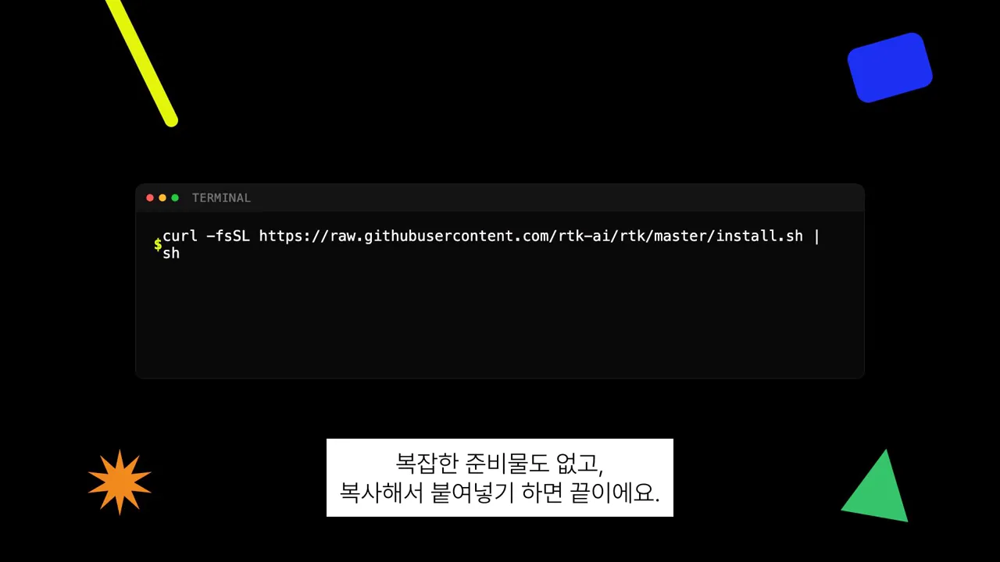
curl -fsSL https://raw.githubusercontent.com/rtk-ai/rtk/master/install.sh | sh설치 다음에는 Claude Code에 연결하는 단계가 하나 더 있어요. 화면에서는 rtk init -g를 쳐요. 이 명령을 한 번 실행하면 앞으로 Claude Code가 터미널 명령을 돌릴 때마다 rtk를 자동으로 거치도록 설정을 잡아 줘요. 기존 설정은 백업본을 만들어 둬요.
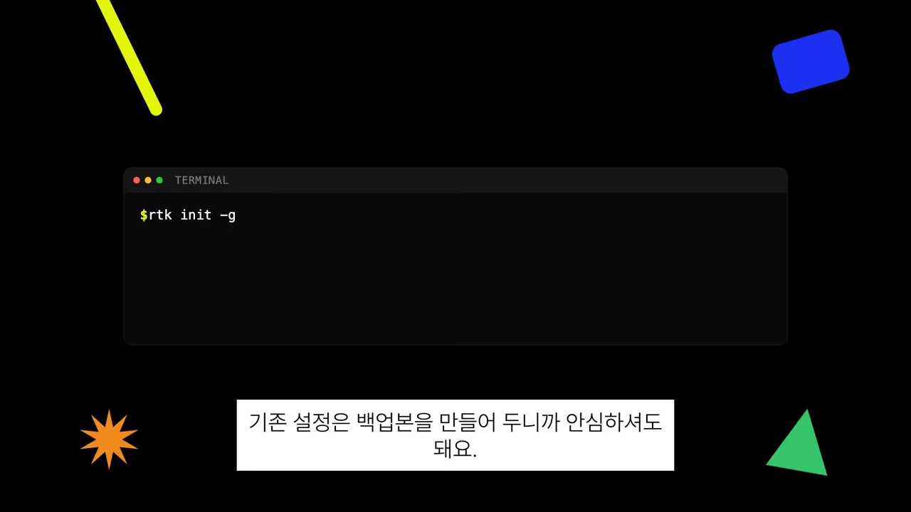
제대로 깔렸는지 확인하기
주의할 점이 하나 있어요. 이름이 똑같은 다른 도구가 있어요. 경고 카드의 작은 글씨가 확인 방법이에요. 설치 뒤 rtk gain을 쳐서 절감 통계가 나오면 제대로 깔린 거예요. 명령을 못 찾는다고 나오면 다른 도구가 깔린 거예요.
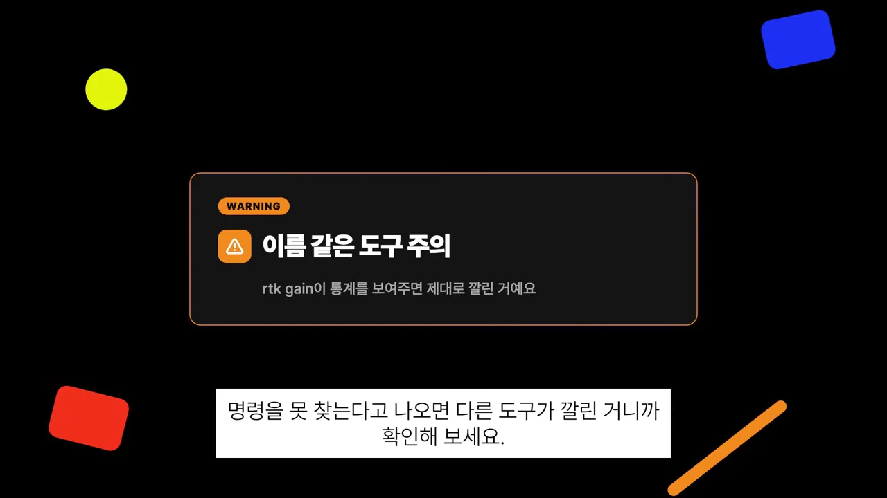
rtk gain 한 번으로 진짜 rtk인지 가려요. 영상 05:02에서 보기연결한 뒤에 바뀌는 것
연결이 끝나면 따로 신경 쓸 게 없어요. 슬라이드의 세 줄이 그 뜻이에요. 평소처럼 일을 시키면 되고, 명령어나 프롬프트를 바꿀 필요가 없고, 줄이는 과정에 추가 토큰도 들지 않아요.
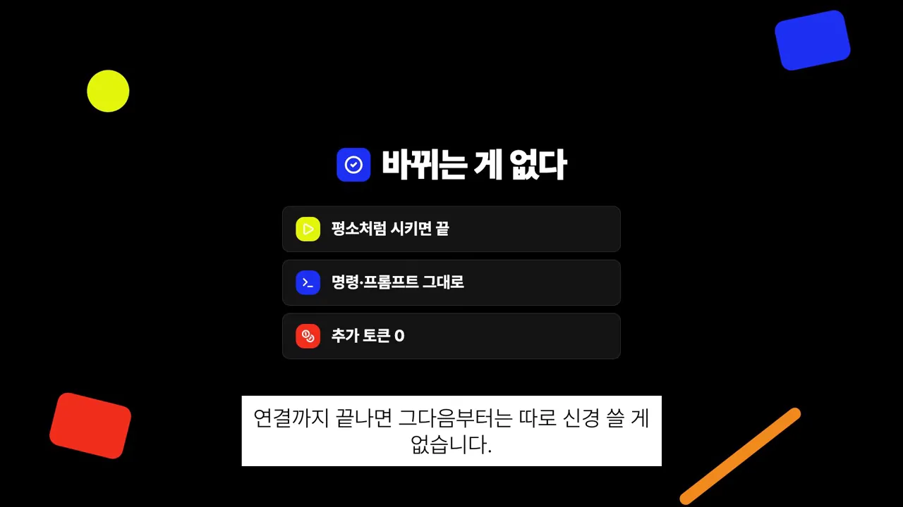
얼마나 아꼈는지 보는 명령도 둘 있어요. 첫 화면의 rtk gain은 터미널 아래 회색 글씨대로 누적 절감 통계와 그래프를 보여 줘요. 며칠 치 절감이 쌓이는 걸 그래프로 볼 수 있어요.
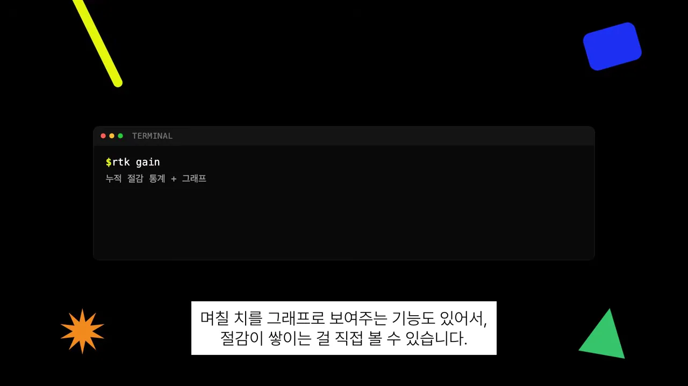
두 번째 화면의 rtk discover는 방향이 반대예요. 평소 작업 기록을 훑어서, rtk를 안 거치는 바람에 놓친 절감 기회가 어디였는지 찾아 줘요.
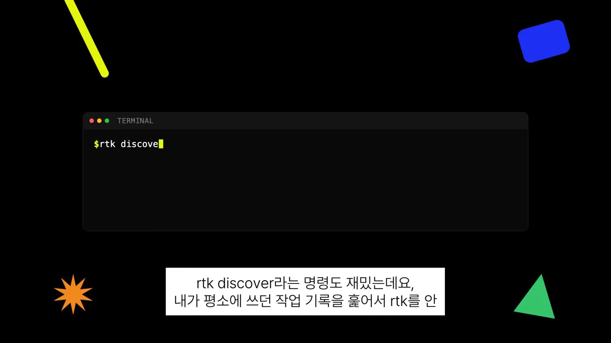
rtk가 못 막는 구멍, 그리고 Serena
영상 첫머리에서 예고한 'rtk만으로는 못 막는 구멍'이 여기서 나와요. 슬라이드가 범위를 둘로 갈라요. 왼쪽 '잡는다'에는 터미널 명령 출력, 오른쪽 '못 잡는다'에는 파일 통째로 읽기가 적혀 있어요.
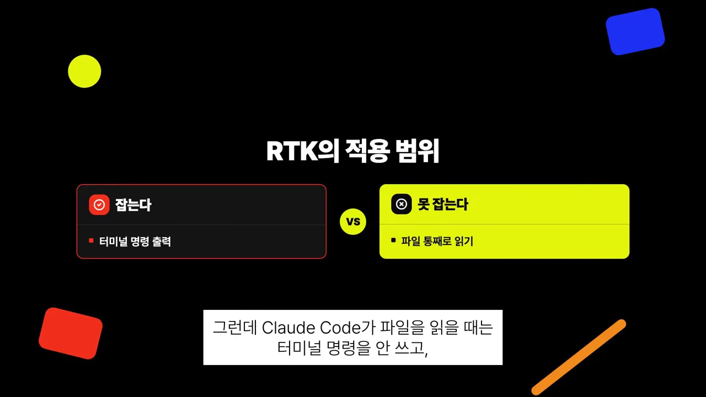
이유는 Claude Code가 파일을 읽는 방식에 있어요. 파일을 읽을 때는 터미널 명령을 쓰지 않고, 자기 안에 있는 별도 읽기 기능을 써요. 이 길은 rtk를 지나지 않아요. 아래 그림은 영상이 말한 두 길을 나란히 놓은 거예요.
이 빈자리를 메우는 게 지난 영상에서 같이 다룬 Serena예요. 화면에 Serena 저장소가 '코드 전용'이라는 제목과 함께 떠요. Serena는 AI가 코드를 통째로 읽는 대신, 고칠 함수 한 부분만 콕 집어 읽게 해 줘요.
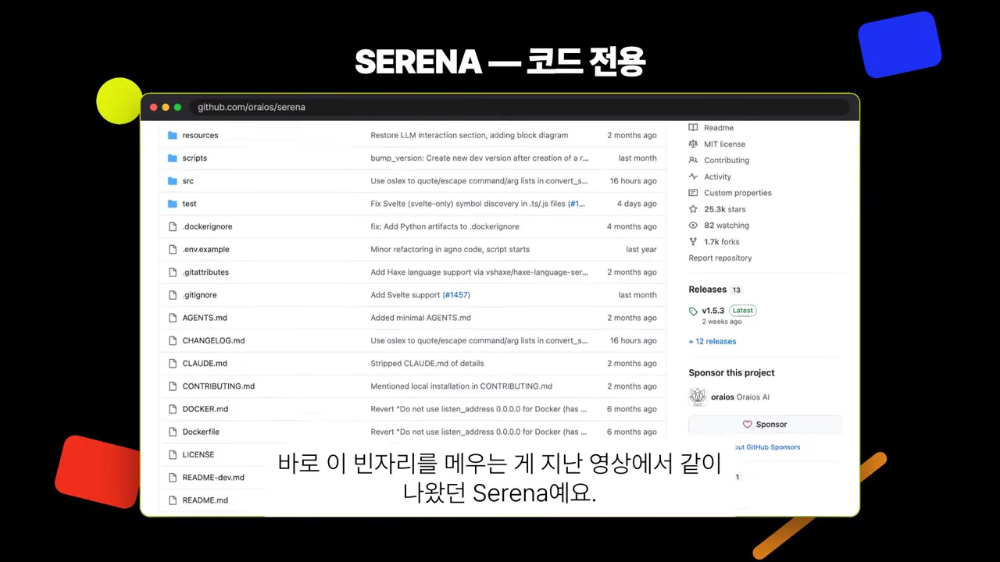
영상은 세 도구의 몫을 표 한 장으로 정리해요. 노란 줄 터미널 출력은 rtk, 파란 줄 코드 읽기는 Serena, 빨간 줄 전체 압축은 Headroom이에요. 둘이 경쟁하는 게 아니라 역할을 나눈 관계라서, Headroom이 둘을 한 번에 묶어 깔아 줬던 거예요.
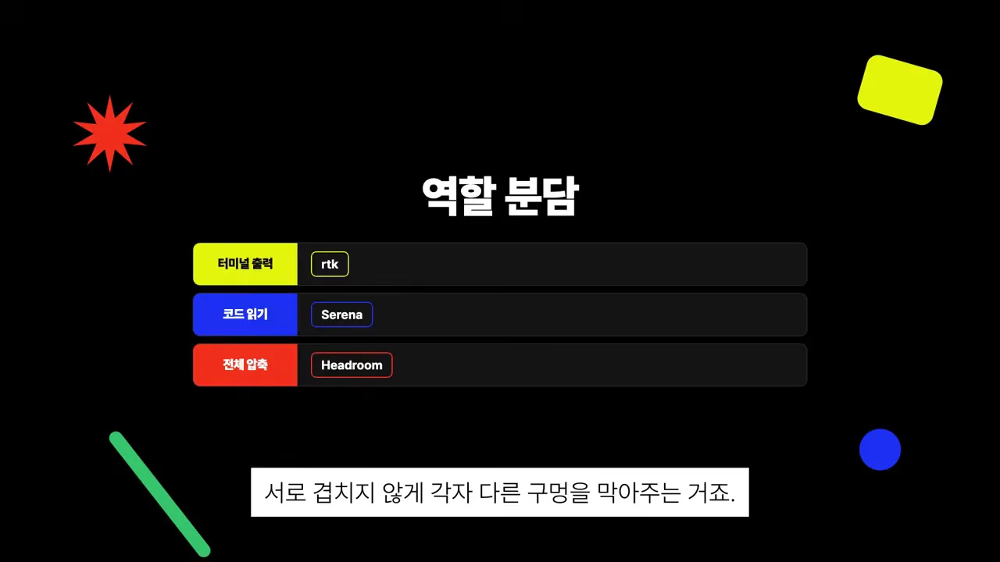
알고 쓸 한계
마지막으로 영상은 한계도 짚어요. 파란 INFO(Information) 카드의 문장 그대로예요. 절감률은 작업 종류에 따라 차이가 크고, 출력을 추려서 보여 주는 방식이라 아주 가끔은 전체 출력을 봐야 할 때가 있어요.
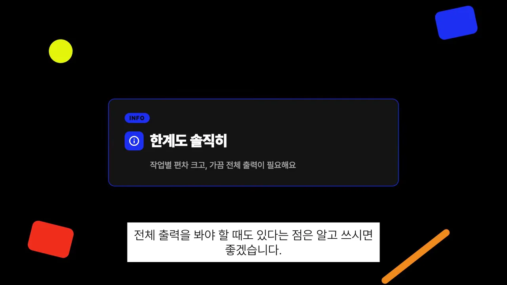
결론은 짧아요. 설치 한 줄, 연결 한 줄로 터미널 출력에서 새는 토큰을 60~90% 줄여요. 쓴 만큼 요금을 내는 방식으로 AI 코딩 도구를 쓴다면 깔아 볼 만하다는 게 영상의 권유예요.